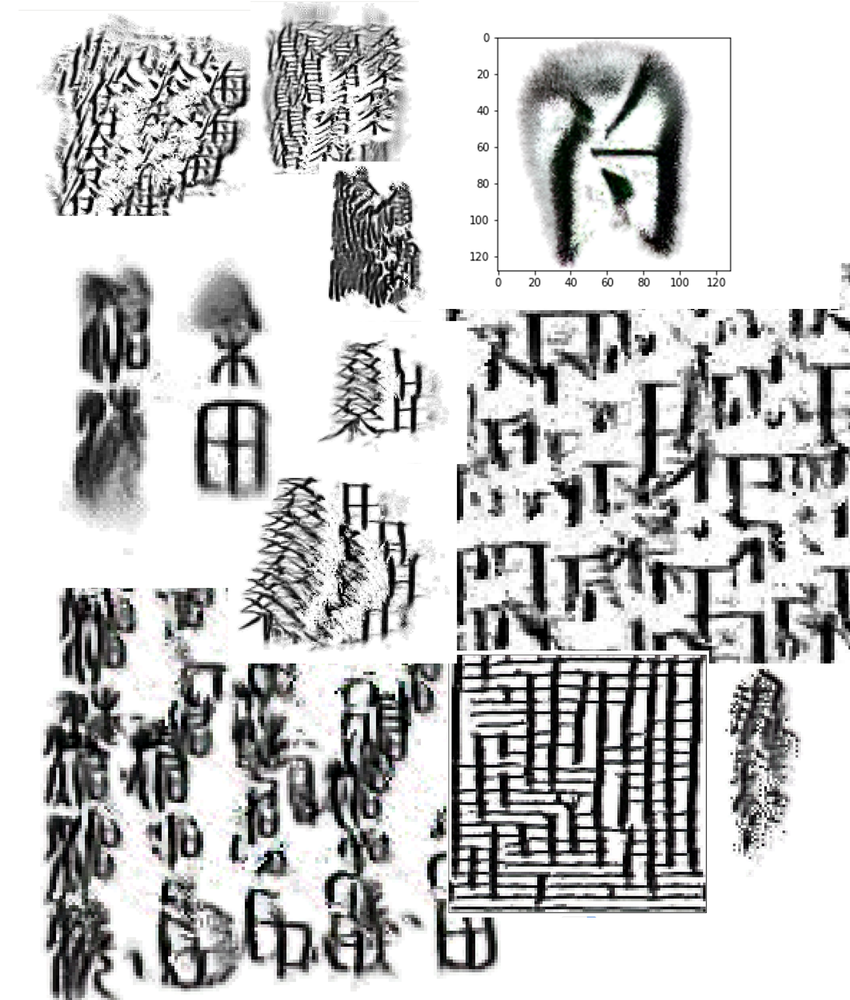

New CharActers is a series of experiments focusing on the integration of Neural Cellular Automata and Chinese characters.
It involves researches and studies on machine learning, neural networks and the transformation of Chinese characters.
Built with the tensorflow framework, it trys to explore and reveal the interconnection between different Chinese character scripts -
from ancient ages to modern times - with the medium of Python and Javascript code.

Section 1: Cellular Automata
A cellular automaton (CA) is a discrete model of computation studied in automata theory. CAs typically consist of a grid of cells being iteratively updated, with the same set of rules being applied to each cell at every step. The new
state
of a cell depends only on the states of the few cells in its immediate neighborhood.
Despite their apparent simplicity, CAs often demonstrate rich, interesting behaviours, and have a long history of being applied to modeling biological phenomena.
A representative example of CA is the Game of Life devised by the British mathematician John Horton Conway in 1970.
Section 2: Chinese Characters
The history of reforming and simplifying Chinese characters is almost as long as the Chinese characters themselves.
In different dynasties, Chinese characters have undergone several great changes, from the Oracle bone script to the Seal script (篆书) and clerical script (隶书),
and finally to the traditional and simplified Chinese in regular scripts (楷书).
Different from most letter-based languages, the evolution of written Chinese was not just on the level of typography, but more about changes on the structural side.
...
The People's Republic of China issued its first round of official character simplifications in two documents, the first in 1956 and the second in 1964. In the 1950s and 1960s, while confusion about simplified characters was still rampant,
transitional characters that mixed simplified parts with yet-to-be simplified parts of characters together appeared briefly, then disappeared.
"Han unification" was an effort by the authors of Unicode and the Universal Character Set to map multiple character sets of the so-called CJK languages (Chinese/Japanese/Korean) into a single set of unified characters and was completed
for the purposes of Unicode in 1991 (Unicode 1.0).
The algorithm is largely based on the Growing Neural Cellular Automata model in Differentiable Self-organizing Systems, an experimental
format collecting invited short articles delving into differentiable self-organizing systems, proposed by Alexander Mordvintsev, Ettore Randazzo, Eyvind Niklasson, and Michael Levin.
This neural cellular automata system is designed for imitating the same plasticity and robustness as biological life in the digital world:
structures and machines could grow and repair themselves. It focuses on Cellular Automata models as a roadmap for the effort of identifying cell-level rules which give rise to complex, regenerative behavior of the collective.
Settings
The models are trained using Nvdia P100 GPU on Google Colaboratory notebooks.
For the regenerating model (developed by Alexander Mordvintsev),
the target/input data is an image with transparent background, ranging in size from 40 by 40 to 100 by 100 pixels. It takes around 35-40 mins for each target to go through 12000 steps. I increased the step number to 16000-20000 for some
explicitly complex-structure characters.
Training Process
The model will go through a few steps before it has the ability to generate, persist, and recover the target pattern.
Below are some graphs/animation visualizing the training progress.
Example of successful training
CA behaviour at training steps 100, 500, 1000, 4000:
A random sample of the patterns in the pool during training, sampled every 20 training steps:
Example of failed training
The training fails mainly due to two reasons: the indistinction of the foreground (the character) and background (transparent pixels) or the disconnection of the colored pixels of the input image.
This means that the input image should idealy be an image with colored pixels forming a innerconnected pattern (in this case, a Chinese character), and transparent background.
Training process:
A random sample of the patterns in the pool during training:
CA behaviour at training steps 100, 500, 1000, 4000:
For more information about the training process, visit the model training log